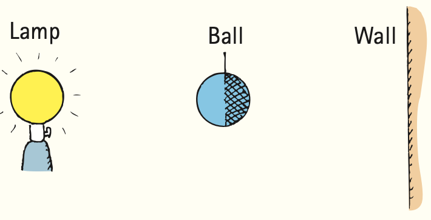

Chapter 26 Review
Summary of Terms (Knowledge)
- Electromagnetic wave
- An energy-carrying wave emitted by a vibrating charge (often electrons) that is composed of oscillating electric and magnetic fields that regenerate one another.
- Electromagnetic spectrum
- The range of electromagnetic waves extending in frequency from radio waves to gamma rays.
- Transparent
- The property of materials to pass light in straight lines without being scattered.
- Opaque
- The property of materials not to allow passage of light (opposite of transparent).
- Shadow
- A shaded region that appears where light rays are blocked by an object.
- Umbra
- The darker part of a shadow where all the light is blocked.
- Penumbra
- A partial shadow that appears where some but not all of the light is blocked.
- Solar eclipse
- An event in which the Moon blocks light from the Sun and the Moon’s shadow falls on part of Earth.
- Lunar eclipse
- An event in which the Moon passes into the shadow of Earth.
Reading Check Questions (Comprehension)
26.1 Electromagnetic Waves
- What does a changing magnetic field induce?
- What does a changing electric field induce?
- What produces an electromagnetic wave?
26.2 Electromagnetic Wave Velocity
- How is the fact that an electromagnetic wave in space never slows down consistent with the conservation of energy?
- How is the fact that an electromagnetic wave in space never speeds up consistent with the conservation of energy?
- What do electric and magnetic fields contain and transport?
26.3 The Electromagnetic Spectrum
- What is the principal difference between a radio wave and light? Between light and an X-ray?
- About how much of the measured electromagnetic spectrum does light occupy?
- What is the color of visible light of the lowest frequencies? Of the highest frequencies?
- How does the frequency of a radio wave compare to the frequency of the vibrating electrons that produce it?
- How is the wavelength of light related to its frequency?
- What is the wavelength of a wave that has a frequency of 1 Hz and travels at 300,000 km/s?
- What do we mean when we say that outer space is not really empty?
26.4 Transparent Materials
- The sound coming from one tuning fork can force another tuning fork to vibrate. What is the analogous effect for light?
- In what region of the electromagnetic spectrum is the resonant frequency of electrons in glass?
- What is the fate of the energy in ultraviolet light that is incident upon glass?
- What is the fate of the energy in visible light that is incident on glass?
- What is the fate of the energy in infrared light that is incident on glass?
- How does the frequency of reemitted light in a transparent material compare with the frequency of the light that stimulates its reemission?
- How does the average speed of light in glass compare with its speed in a vacuum?
- How does the speed of light that emerges from a pane of glass compare with the speed of light incident on the glass?
- Why are infrared waves often called heat waves?
26.5 Opaque Materials
- Why do opaque materials become warmer when light shines on them?
- Why are metals shiny?
- Why do wet objects normally look darker than the same objects when dry?
- Distinguish between an umbra and a penumbra.
- Do Earth and the Moon always cast shadows? What do we call the occurrence where one passes within the shadow of the other?
26.6 Seeing Light—The Eye
- How do the rods in the eye differ from the cones?
- When are objects on the periphery of your vision most noticeable?
- What besides the amount of light affects the size of the pupil of the eye?
Think and Do (Hands-On Application)
- Compare the size of the Moon on the horizon with its size higher in the sky. One way to do this is to hold at arm’s length various objects that will just barely block out the Moon. Experiment until you find something just right, perhaps a thick pencil or a pen. You’ll find that the object will be smaller than a centimeter, depending on the length of your arms. Is the Moon really bigger when it is near the horizon?
- Which eye do you use more? To test which you favor, hold a finger up at arm’s length. With both eyes open, look past it at a distant object. Now close your right eye. If your finger appears to jump to the right, then you use your right eye more. Check with friends who are both left-handed and right-handed. Is there a correlation between dominant eye and dominant hand?
Think and Do 32: Dominant-eye test illustration.
Think and Solve (Mathematical Application)
- In 1676, the Danish astronomer Ole Roemer had one of those “aha” moments in science. He concluded from accumulated observations of eclipses of Jupiter’s moon at different times of the year that light must travel at finite speed and needed 1300 s to cross the diameter of Earth’s orbit around the Sun. Using 300,000,000 km for the diameter of Earth’s orbit, calculate the speed of light based on Roemer’s 1300-s estimate. How does it differ from a modern value for the speed of light?
- More than 200 years later, Albert A. Michelson sent a beam of light from a revolving mirror to a stationary mirror 15 km away. Show that the time interval between light leaving and returning to the revolving mirror was 0.0001 s.
- The Sun is 1.50 × 1011 m from Earth. How long does it take the Sun’s light to reach Earth? How long does it take light to cross the diameter of Earth’s orbit? Compare this time with the time measured by Roemer in the 17th century (treated in Problem 33).
- Show that it would take about 2.5 s for a pulse of laser light to reach the Moon and to bounce back to Earth.
- The nearest star beyond the Sun is Alpha Centauri, 4.2 × 1016 m away. If we were to receive a radio message from this star today, show that it would have been sent 4.4 years ago.
- A ball with the same diameter as a lightbulb is held halfway between the bulb and a wall, as shown in the sketch. Construct light rays (similar to those in Figure 26.15) and show that the diameter of the umbra on the wall is the same as the diameter of the ball and that the diameter of the penumbra is three times the diameter of the ball.

Think and Solve 38: Lamp, ball, and wall shadow model. - A certain radar installation tracks airplanes by transmitting electromagnetic radiation of wavelength 3 cm. (a) Show that the frequency of this radiation is 10 GHz. (b) Show that the time required for a pulse of radar waves to reach an airplane 5 km away and return is 3.3 × 10−5 s.
- The wavelength of light changes as light goes from one medium to another, while the frequency remains the same. Is the wavelength longer or shorter in water than in air? Explain in terms of the equation speed = frequency × wavelength. A certain orange light has a wavelength of 600 nm (6 × 10−7 m) in air. What is its wavelength in water, where light travels at 75% of its speed in air? In Plexiglas, where light travels at 67% of its speed in air?
Think and Explain (Synthesis)
- A friend says, in a profound tone, that light is the only thing we can see. Is your friend correct?
- Your friend goes on to say that light is produced by the connection between electricity and magnetism. Is your friend correct?
- What is the fundamental source of electromagnetic radiation?
- Which have the longest wavelengths: light waves, X-rays, or radio waves?
- Which has shorter wavelengths: ultraviolet or infrared? Which has higher frequencies?
- How is it possible to take photographs in complete darkness?
- What is it, exactly, that waves in a light wave?
- What is the principal difference between a gamma ray and an infrared ray?
- What is the speed of X-rays in a vacuum?
- Which travels faster through a vacuum: an infrared ray or a gamma ray?
- Your friend says that microwaves and ultraviolet light have different wavelengths but travel through space at the same speed. Do you agree or disagree?
- Your friend says that any radio wave travels appreciably faster than any sound wave. Do you agree or disagree, and why?
- Your friend says that outer space, instead of being empty, is chock full of electromagnetic waves. Do you agree or disagree?
- Are the wavelengths of radio and television signals longer or shorter than waves detectable by the human eye?
- Suppose a light wave and a sound wave have the same frequency. Which has the longer wavelength?
- Which requires a physical medium in which to travel: light, sound, or both? Explain.
- Do radio waves travel at the speed of sound, at the speed of light, or somewhere in between?
- What are the similarities and differences between radio waves and light?
- A helium–neon laser emits light of wavelength 633 nanometers (nm). Light from an argon laser has a wavelength of 515 nm. Which laser emits the higher-frequency light?
- Why would you expect the speed of light to be slightly less in the atmosphere than in a vacuum?
- Is glass transparent or opaque to light of frequencies that match its own natural frequencies? Explain.
- Short wavelengths of visible light interact more frequently with the atoms in glass than do longer wavelengths. Does this interaction time tend to speed up or to slow down the average speed of short-wavelength light in glass?
- What determines whether a material is transparent or opaque?
- You can get a sunburn on a cloudy day, but you can’t get a sunburn even on a sunny day if you are behind glass. Explain.
- Suppose that sunlight falls both on a pair of reading glasses and on a pair of dark sunglasses. Which pair of glasses would you expect to become warmer? Defend your answer.
- Why does a high-flying airplane cast little or no shadow on the ground below while a low-flying airplane casts a sharp shadow?
- Light from a location on which you concentrate your attention falls on your fovea, which contains only cones. If you wish to observe a weak source of light, like a faint star, why shouldn’t you look directly at the source?
- Why do objects illuminated by moonlight lack color?
- Why don’t we see color at the periphery of our vision?
- Why should you be skeptical when your sweetheart holds you and looks at you with constricted pupils and says, “I love you”?
- From your experimentation with Figure 26.17, is your blind spot located noseward from your fovea or to the outside of it?
- Can we infer that a person with large pupils is generally happier than a person with small pupils? If not, why not?
- The planet Jupiter is more than five times as far from the Sun as planet Earth. How does the brightness of the Sun appear at this greater distance?
- When you look at the night sky, some stars are brighter than others. Can you correctly say that the brightest stars emit more light? Defend your answer.
- When you look at a distant galaxy through a telescope, how is it that you’re looking backward in time?
- When we look at the Sun, we are seeing it as it was 8 minutes ago. So we can see the Sun only “in the past.” When you look at the back of your own hand, do you see it “now” or “in the past”?
- “20/20 vision” is an arbitrary measure of vision—meaning that you can read what an average person can read at a distance of 20 feet in daylight. What is this distance in meters?
Think and Discuss (Evaluation)
- We hear people talk of “ultraviolet light” and “infrared light.” Why are these terms misleading? Why are we less likely to hear people talk of “radio light” and “X-ray light”?
- Knowing that interplanetary space consists of a vacuum, what is your evidence that electromagnetic waves can travel through a vacuum?
- Can you see radio waves? Can you hear radio waves? Discuss this with people who still confuse sound and radio waves.
- When astronomers observe a supernova explosion in a distant galaxy, they see a sudden, simultaneous rise in visible light and other forms of electromagnetic radiation. Is this evidence to support the idea that the speed of light is independent of frequency? Explain.
- If you fire a bullet through a board, it will slow down inside and emerge at a speed that is less than the speed at which it entered. Does light, then, similarly slow down when it passes through glass and also emerge at a lower speed? Defend your answer.
- Pretend that a person can walk only at a certain pace—no faster, no slower. If you time her uninterrupted walk across a room of known length, you can calculate her walking speed. If, however, she stops momentarily along the way to greet others in the room, the extra time spent in her brief interactions gives an average speed across the room that is less than her walking speed. How is this similar to light passing through glass? In what way does it differ?
- Only some of the people on the daytime side of Earth can witness a solar eclipse when it occurs, whereas all the people on the nighttime side of Earth can witness a lunar eclipse when it occurs. Why is this so?
- Do planets cast shadows? What is your evidence?
- Lunar eclipses are always eclipses of a full Moon. That is, the Moon is always seen full just before and after Earth’s shadow passes over it. Why is this? Why can’t we ever have a lunar eclipse when the Moon is in its crescent or half-moon phase?